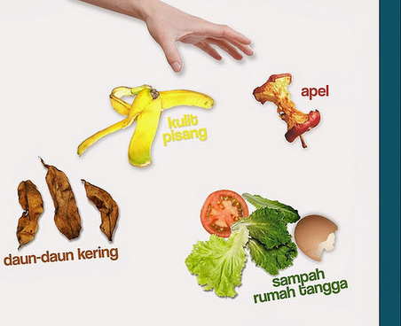
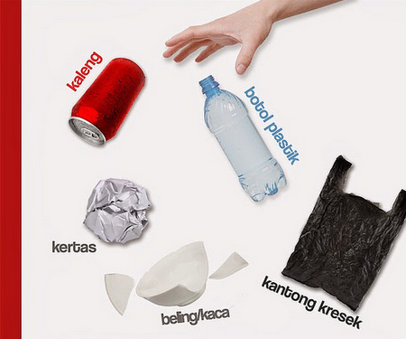

Sampah Organik

Sampah organik mencakup sampah-sampah alami seperti dedaunan, ranting pohon, dan sisa makanan. Sampah organik mudah terurai di alam. Selain itu sampah organik juga dapat bermanfaat untuk bahan pembuatan pupuk kompos.
Sampah B3

Sampah B3 ini mencakup sampah-sampah yang berbahaya dan beracun. Yang termasuk dalam kategori ini adalah pecahan kaca, bahan-bahan kimia, dan benda berbahaya lainnya.
Sampah Anorganik
Sampah anogranik mencakup sampah-sampah sisa perabotan rumah tangga seperti plastik, botol plastik, kaleng dan kertas. Sampah anorganik termasuk kedalam kategori yang lama terurai. sampah anorganik ini dapat didaur ulang.